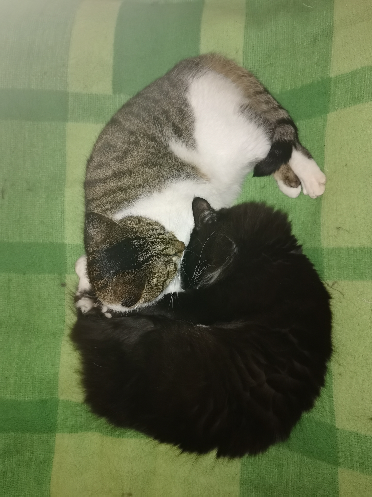

Эту страницу я создаю для того, чтобы выполнить свое домашнее задание ко второму уроку курса
"Знакомство с веб-технологиями"
А также для того, чтобы научить работать с HTML и CSS
Меня зовут Роман, мне 37 лет. Работаю в области фармацевтического производства на должности
менеджера по валидации. Занимаюсь валидацией компьютеризированных систем.
В рамках своих должностных обязанностей я выполняю следующие задачи:
Работа эта связана с выполнением правил надлежащей производственной практики. Подробнее о правилах и валидации в частности можно узнать из Решения №77 ЕАЭС.
У меня есть два кота, которых зовут Кеша и Тиша. Кеша имеет окрас "черный маркиз", а Тиша - "табби биколор":.
Кеша очень активный кот, любит играть с игрушечными мышками и птичками, а также гоняться за мячиком на веревке.
Тиша, напротив, очень спокойный кот, даже меланхоличный. Очень любит спать, чаще всего - на коленях у меня или жены
Иногда у них случаются конфликты и они дерутся друг с другом, да так, что летят клочки по закоулочкам.
Но, в любом случае, каждая их драка заканчивается сном в обнимку:
